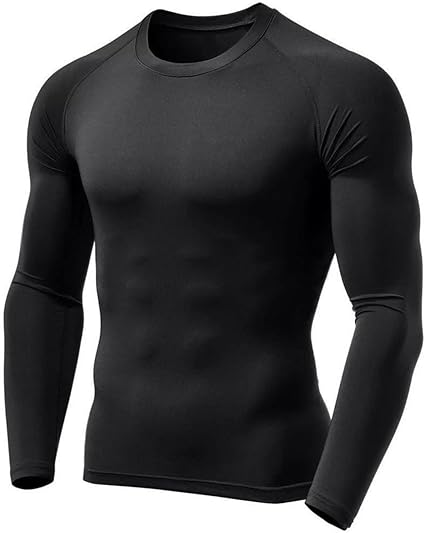
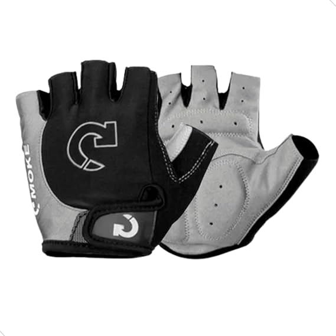

Ciclismo
O ciclismo começou no século XIX, com a invenção da bicicleta. As primeiras corridas aconteceram em 1868, e o **Tour de France** foi criado em 1903. Desde então, o esporte se popularizou globalmente, com várias modalidades e grandes competições.
Itens à disposição
-
Camisa Térmica Masculina Segunda Pele Proteção Uv F7NEWSTYLE

R$28,90
Tamanhos Disponiveis: P, M, G e GG
-
Conjunto de Ciclismo Masculino Inverno

Cor: Rosa
Tamanhos disponiveis: PP, P, M, G e GG
-
Luva Para Ciclista Bike Ciclismo Gel Profissional Revestida Super Confortavel Mundo Compras

R$39,90